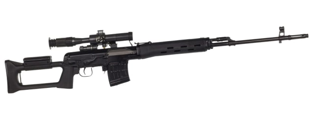

Снайперская винтовка

Опиcание:
Калиматорный прицел с ручным затвором.
Стоимость: 900$
Характеристики:
- Ствол. Должен быть прочным, выдерживать сотни выстрелов, не деформируясь от нагрева. Для этого используют нержавеющие стали или хромомолибденовые сплавы. Толстостенные стволы (иногда почти 2 см в диаметре) меньше греются. Иногда на стволе фрезеруют тонкие желобки для лучшего теплоотвода.
- Ложе. От неё зависит удобство и стабильность прицеливания. Современное ложе делают из композитов и алюминиевых сплавов. Главное — правильная посадка ствола: он должен быть закреплён так, чтобы не касаться ложа и свободно «вибрировать» при выстреле. Это называется «свободно вывешенный ствол» — принцип, обеспечивающий повторяемость выстрелов.
- Оптический прицел. Задача — дать чёткую картинку цели, при этом не лишить стрелка обзора. Существуют прицелы с переменным или фиксированным фокусными расстояниями, с разными диаметрами объективов, системами прицельных сеток.

Опиcание:
Калиматорный прицел с ручным затвором. Стоимость: 900$
Характеристики:
- Ствол. Должен быть прочным, выдерживать сотни выстрелов, не деформируясь от нагрева. Для этого используют нержавеющие стали или хромомолибденовые сплавы. Толстостенные стволы (иногда почти 2 см в диаметре) меньше греются. Иногда на стволе фрезеруют тонкие желобки для лучшего теплоотвода.
- Ложе. От неё зависит удобство и стабильность прицеливания. Современное ложе делают из композитов и алюминиевых сплавов. Главное — правильная посадка ствола: он должен быть закреплён так, чтобы не касаться ложа и свободно «вибрировать» при выстреле. Это называется «свободно вывешенный ствол» — принцип, обеспечивающий повторяемость выстрелов.
- Оптический прицел. Задача — дать чёткую картинку цели, при этом не лишить стрелка обзора. Существуют прицелы с переменным или фиксированным фокусными расстояниями, с разными диаметрами объективов, системами прицельных сеток.